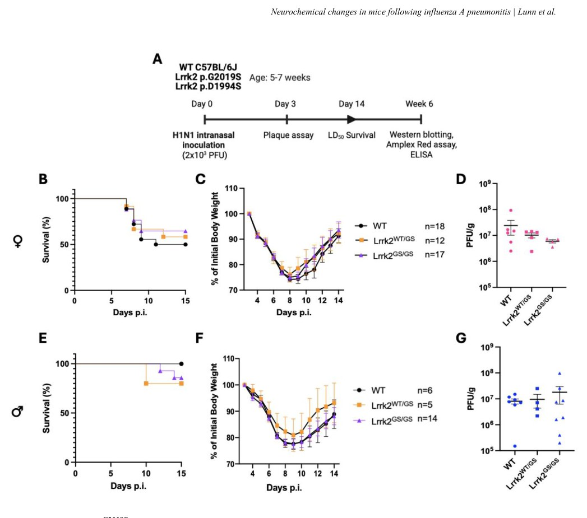

Gripp miyada iz qoldiradi: LRRK2 mutatsiyasi oqsil o‘zgarishlarini qanday qo‘zg‘atadi


Parkinson kasalligiga genetik moyilligi bor odamlarning ba'zilarida alomatlar namoyon bo‘lib, boshqalarda bilinmasligining sababi nimada? Tadqiqotchilar bunga infeksiyalar kabi tashqi omillar turtki bo‘lishini taxmin qilishdi. Sichqonlar ustida o‘tkazilgan tajriba gripp infeksiyasi LRRK2 genidagi mutatsiya fonida miya to‘qimalarida oqsillar to‘planishiga olib kelishini ko‘rsatdi. Bu topilma neyrodegenerativ kasalliklarning rivojlanish mexanizmini tushunishga yordam beradi.
Asosiysi
- LRRK2 mutatsiyalari sichqonlarda o‘tkir gripp og‘irligini o‘zgartirmaydi
- Grippdan olti hafta o‘tgach miyada pSer129 alfa-sinuklein miqdori ortadi
- Infeksiya miyada oksidlovchi stress va oqsil modifikatsiyasini kuchaytiradi
Batafsil
LRRK2 genidagi mutatsiyalar Parkinson kasalligi xavfini oshiradi, biroq kasallik barcha tashuvchilarda ham rivojlanavermaydi. Avvalroq olimlar patologiya yuzaga kelishi uchun virusli infeksiya kabi qo‘shimcha tashqi ta'sir kerakligini taxmin qilishgan edi. Tadqiqotchilar guruhi LRRK2 mutatsiyasiga ega (shu jumladan kinaza faolligi oshgan p.G2019S varianti) sichqonlarni H1N1 gripp virusi bilan zararlab, ushbu gipotezani tekshirib ko‘rdi.
Infeksiyaning o‘tkir fazasi va hayvonlarning omon qolish darajasi o‘rtasida farq bo‘lmagan bo‘lsa-da, olti hafta o‘tgach o‘tkazilgan tahlil xavotirli o‘zgarishlarni aniqladi. Gomozigotli LRRK2 p.G2019S mutatsiyasiga ega tirik qolgan sichqonlarning miyasida fosforillangan alfa-sinuklein (pSer129) va tau-oqsil (pSer199) miqdori oshgani aniqlandi. Shuningdek, miya proteomida oksidlovchi stress belgilari ortgani qayd etildi.
Olingan natijalar nafas yo‘llari virusli infeksiyasi genetik zaif organizmlarda miya proteomini o‘zgartirishga qodirligini ko‘rsatadi. Bu periferik infeksiyalarning neyrodegenerativ jarayonlarni boshlashdagi rolini tushuntirishi mumkin.
Cheklovlar
Tadqiqot faqat hayvonlar modeli va bitta virus shtammi asosida bajarilgan.
Maqolaning to'liq tarjimasi
Gripp A pnevmonitidan keyin Lrrk2 p.G2019S-mutant sichqonlarida fosforillangan α-sinuklein va fosforillangan tau oqsili darajasining oshishi
So'zlar soni: 4082 so'z. Yuguruvchi sarlavha: Gripp A pnevmonitidan keyin sichqonlarda neyrokimyoviy o'zgarishlar
Manfaatlar to'qnashuvi: Mualliflar manfaatlar to'qnashuvi yo'qligini e'lon qiladilar.
Annotatsiya
Kirish: Gripp virusi ta'siri parkinsonizm chastotasini oshiradi. Biz va boshqalar ilgari Parkinson bilan bog'liq LRRK2 lokusidagi allel variantlari xo'jayinning virulent mikroblarga nisbatan javobini modulyatsiya qilishini aniqlagan edik.
Maqsad: Biz Lrrk2 mutatsiyalari burun bo'shlig'i orqali yuqtirilgan o'pka infeksiyasidan keyin kattalar hayvonlarida kasallik natijalarini o'zgartirishini o'rganib chiqdik.
Usullar: Biz mutant knock-in Lrrk2 genotipli C57BL/6J sichqonlariga H1N1 serotipli gripp A virusini (1 × LD₅₀ = 2000 ta plaks hosil qiluvchi birlik) burun orqali yubordik.
Xulosa: Hayot uchun xavfli pnevmotrop RNA virusi keltirib chiqargan infeksiyadan omon qolgan gomoziygot Lrrk2G2019S-mutant sichqonlari miyadagi oksidlovchi stress, pSer199 tau va pSer129 α-sinuklein darajalarining o'zgarishini ko'rsatadi. Ushbu natijalar odamlarda neyrodegeneratsiya bilan bog'liq o'zgarishlarning boshlanishiga aloqador bo'lishi mumkin va LRRK2 mutantlarining penetratsiya darajasi hamda ekspressivligidagi farqlarni tushuntirishga yordam berishi mumkin.
Kirish
Parkinson kasalligi (PK), murakkab neyrodegenerativ kasallik, tarqalishi ortib bormoqda, ammo kasallik etiologiyasi noma'lumligicha qolmoqda. PK genetik xavf, atrof-muhit omillari va qarish o'rtasidagi murakkab o'zaro ta'sir natijasida kelib chiqadi deb hisoblanadi. Bir nechta atrof-muhit xavf omillari aniqlangan, jumladan neyrotrop bo'lmagan virusli infeksiyalar. Masalan, gripp A serotipi H1N1 varianti keltirib chiqargan gripp pandemiyasi keyinchalik von Economo ensefalitining paydo bo'lishi bilan bog'liq bo'lgan, shu jumladan infeksiyadan keyingi parkinsonizm bilan bog'liq shakli ham. Yaqinda gripp bilan kasallanish tarixi (o'n besh yilgacha bo'lgan davrda) PK bilan kasallanishning o'sishi bilan bog'liq deb topildi. Sichqonlarda yuqori patogenli parrandalar grippi H5N1 serotipi (neyrotrop virus) bilan burun orqali inokulyatsiyadan so'ng infeksiya yovvoyi turdagi sichqonlarning miyasida α-sinuklein fosforillanishi va agregatsiyasiga, shuningdek dofamin hujayralarining yo'qolishiga olib keldi. Bundan tashqari, H1N1 ex vivo sharoitida α-sinuklein darajasini oshirishi ko'rsatilgan, bu grippga qarshi dori bilan oldindan davolash orqali yumshatilgan. Atrof-muhit xavf omillaridan tashqari, >90 lokusdagi variantlar aniqlangan va ular PK xavfining o'zgarishi bilan bog'liq, shu jumladan LRRK2 genidagi mutatsiyalar, ular ixtisoslashgan klinikalarda kuzatiladigan parkinsonizm holatlarining ~2% ni tashkil qiladi. Ushbu gendagi mutatsiyalar PK ning ham oilaviy, ham sporadik shakllari uchun xavf tug'diradi, garchi mexanizmlar noma'lumligicha qolmoqda. Shunisi e'tiborga loyiqki, LRRK2 mutatsiyalari bilan bog'liq to'liq bo'lmagan penetrantlik mavjud, shu jumladan eng keng tarqalgan p.G2019S varianti uchun. Bu bizga LRRK2 mutatsiyasi tashuvchilarida kasallik namoyon bo'lishi uchun ikkinchi qo'zg'atuvchi, genetik yoki atrof-muhit omili talab qilinishi mumkinligini ko'rsatdi; biz va boshqalar oxirgi omil mikrobial tabiatga ega bo'lishi mumkinligini taxmin qildik. Muhimi, LRRK2 lokusidagi mutatsiyalar Kron kasalligi, moxov va tizimli qizil yuguruk bilan ham bog'liq. Ushbu kasalliklarning har biri surunkali tartibsiz yallig'lanish bilan tavsiflanadi. To'rt xil kasallik o'rtasidagi umumiy xavf lokusi LRRK2 ning evolyutsion saqlanib qolgan funksiyasi immunitet javoblarini tartibga solishni o'z ichiga oladimi degan savolni tug'diradi. LRRK2 periferiyada (masalan, suyak iligi, o'pka) miyaga qaraganda yuqoriroq darajada ifodalanadi va immunitet tizimi hujayralarida (neytrofillar, monotsitlar va makrofaglar) neyronlarga qaraganda ko'proq uchraydi. Bundan tashqari, oqsil infeksion patogenlar va yallig'lanish mediatorlari (masalan, IFN-γ va NF-κB) tomonidan yuqoriga ko'tarilishi mumkin, bu LRRK2 patogenlarga qarshi himoya va immunitet tizimi javoblarida ishtirok etishini ko'rsatadi. Bir nechta tadqiqotlar Lrrk2 ning bakterial patogenlikka mikrobga bog'liq tarzda ta'sirini ko'rsatdi. Biz ilgari Lrrk2 ning virusli infeksiyalarga javob berishdagi rolini ham o'rganganmiz; u yerda biz sichqon bolalarida reovirus [izotip type-3 Dearing (T3D)] bilan burun orqali inokulyatsiyadan keyin kasallik natijalari Lrrk2 allel variantlari tomonidan jinsga bog'liq tarzda ta'sir qilishini ko'rsatdik. Bu yerda biz Lrrk2 allel variantlari kattalar C57BL/6J sichqonlarida potentsial o'limga olib keladigan o'pka infeksiyasining borishini o'zgartira olishini va pnevmotrop RNK virusi ta'siridan keyin miya patologiyasini aniqlay olishini tekshirdik. Biz Lrrk2 ning kinaza-giperaktiv varianti o'pkada virus replikatsiyasini kamaytirishi va kattalar hayvonlarida omon qolish darajasini o'zgartirishi mumkinligini taxmin qildik. Bundan tashqari, biz ushbu infeksiya omon qolgan hayvonlarda neyrokimyoviy markerlarning o'zgarishiga olib kelishi mumkinligini taxmin qildik. Buni tekshirish uchun biz yovvoyi turdagi va Lrrk2 nok-in mutant sichqonlarida pnevmonitni qo'zg'atish uchun sichqonlarga moslashtirilgan gripp A virusi, H1N1 serotipi (A/Fort Monmouth/1/1947) dan foydalandik. Biz Lrrk2 p.G2019S yoki p.D1994S mutantlarining hech biri o'tkir kasallik natijalarini o'zgartirmaganligini aniqladik. Biroq, gripp H1N1 infeksiyasidan omon qolish gomozigotali Lrrk2 p.G2019S hayvonlarining miyasida o'zlarining axlatdoshlariga nisbatan oksidlovchi stress darajasining oshishiga va α-sinuklein va tau almashinuvining o'zgarishiga olib keldi.
USULLAR: Sichqonlar koloniyalari
Barcha sichqon koloniyalari geterozigotali naslchilik juftlari yordamida C57BL/6J fonida saqlandi. Hayvonlar ustida tajribalar Kanadaning Hayvonlarni parvarish qilish kengashi ko‘rsatmalariga muvofiq amalga oshirildi va Ottava universitetining Hayvonlarni parvarish qilish qo‘mitasining Etika kengashi tomonidan tasdiqlandi. Virusli infeksiyalar bilan bog‘liq tajribalar 2-darajali bioxavfsizlik darajasidagi hayvonxonada bajarildi. Lrrk2 p.G2019S (MGI:5295368) va Lrrk2 p.D1994S (MGI:5295371) nok-in sichqonlari doktor Derya Shimshek tomonidan taqdim etilgan. Ushbu tadqiqotda ko‘rsatilganidek, ham urg‘ochi, ham erkak sichqonlar ishlatildi.
Sichqonga moslashtirilgan gripp A H1N1 virusi bilan burun orqali infeksiyalash
Gripp A H1N1 virusining sichqonga moslashtirilgan varianti [A/Fort Monmouth/1/1947 ('FM-MA')] avval tavsiflangan edi. 5–7 haftalik voyaga yetgan sichqonlar 1 daqiqa davomotida 1 l/min tezlikda O₂ da 3% izofluran bilan behush qilindi. FM-MA H1N1 ning 2× 10³ ta blyaska hosil qiluvchi birlik (PFU) dozasi (50 mkl PBS da tayyorlangan) burun bo‘shlig‘iga yuborildi va taxminan 50% o‘lim darajasi bilan og‘ir pnevmonitni keltirib chiqardi (1 LD₅₀). Sichqonlar emlashdan keyin 14 kun davomida (dpi) kuzatildi va 4-14 dpi kunlari kuniga ikki marta tortildi. Evtanaziyani talab qiluvchi yakuniy mezonlarga moribund holat, nafas olishning qiyinlashishi yoki tana vaznining ≥ 30% yo‘qolishi kiritildi. O‘tkir virusli infeksiyadan omon qolgan sichqonlar (14 dpi da tirik qolganligi bilan aniqlanadi) emlashdan keyingi umumiy 6 haftagacha (wpi) yana 4 hafta davomida saqlandi (Rasm 1a). H1N1 ta'sir qilgan sichqonlarga parallel ravishda, soxta emlangan hayvonlarga virusiz 50 mkl PBS berildi.
Gripp A virusi serotipi H1N1 blyaska tahlili
2× 10³ PFU H1N1 bilan burun orqali infeksiyalangan sichqonlar 3 dpi da jonsizlantirildi. O‘pka tez muzlatildi, so‘ngra Magna Lyser (Roche) qurilmasida metall burunlar yordamida maksimal tezlikda 10 soniya davomida PBS da (3:1, v:w) lizis qilindi va bir marta muzlatilib-eritildi. MDCK hujayralari 6 o‘rali reaktillarda 90% konfluensiyagacha o‘stirildi. O‘pka homogenatlari markazdan qochirildi (5000 ayl/min) va supernatantlar zardobsiz DMEM da ketma-ket suyultirildi (10 marta). MDCK monoxonalari PBS bilan ikki marta yuvildi, har bir suyultirilmadan 100 mkl yopildi va 37 °C da, 5% CO₂ da 30 daqiqa davomida, har 15 daqiqada tebratib turib inkubatsiya qilindi. Bir soatdan keyin hujayralar ustiga 0,1 mkG/ml TPCK-trypsin saqlagan 1:1 nisbatdagi 1,2% agaroz va 2xDMEM dan iborat 3 ml aralashma qo‘yildi va 3 kun davomida inkubatsiya qilindi. Hujayralar metanol:sirka kislotasi (3:1) aralashmasida bir soat davomida fiksatsiya qilindi. Qoplamalar kran suvi ostida olib tashlandi va Kumassi ko‘k bo‘yog‘i bilan 30 daqiqa davomida bo‘yaldi. Blyaskalar vizual tarzda sanaldi. Virus titrlari to‘qima grammiga nisbatan PFU sifatida ko‘rsatilgan.
Oqsishni ajratib olish
Oqsil yuqorida virus titri tahlillari uchun tasvirlanganidek to‘qimalarni homogenlash orqali ajratib olindi. Alikvotlar 1% Triton-X 100 va fosfataza inhibitrlariga ega 2x proteazada (Thermo Scientific) tayyorlandi va 4 °C da 30 daqiqa davomida 14 800 ayl/min tezlikda markazdan qochirildi. Oqsil konsentratsiyalari mikroteyner protsedurasiga muvofiq btsinxonin kislotasi (BCA) tahlil to‘plami (Thermo Fisher Scientific, 23227) yordamida aniqlandi.
α-sinuklein va tau oqsilini ELISA yordamida miqdoriy aniqlash
Lizatlarda umumiy α-sinuklein avval tavsiflanganidek sendvich ELISA yordamida o‘lchandi. α-sinuklein oqsili konsentratsiyalari har bir namunadagi umumiy oqsil konsentratsiyasiga normallashtirildi. Umumiy sichqon tau oqsili Tau (Total) Mouse ELISA Kit (KMB7011, Invitrogen) yordamida o‘lchandi. Sichqoncha fosfo-tau (fosfo-serin 199) miqdori Mouse Tau (Phospho) [Ser199] ELISA Kit (KMB7041, Invitrogen) yordamida o‘lchandi.
Vestern-blotting
Oqsil namunalari (har bir o‘ra uchun 40 mkg; anti-nitrotirozin uchun 75 mkg) 1xNuPAGE™ LDS buferi bilan aralashtirildi, 95 °C da 5 daqiqa davomida qaynatildi va qaytaruvchi (anti-nitrotirozin uchun qaytarmaydigan) sharoitlarda 4-12% gradusli SDS-MES gellarida yugurtirildi. Oqsillar tris-glisin-metanol buferida yarim quruq o‘tkazish yo‘li bilan PVDF membranalariga o‘tkazildi. Anti-nitrotirozin antitana (Cell Signalling, 9691S) blotlari plyonkada tasvirlandi, ImageJ yordamida miqdoriy baholandi va Ponceau S bo‘yalishiga normallashtirildi. Fosfo-α-sinuklein (Ser129) (Abcam, ab51253), hSA4 (tavsiflanganidek (Mollenhauer va boshq. 2008) rekombinant, to‘liq uzunlikdagi, inson α-sinukleiniga qarshi ishlab chiqarilgan va affin tozalangan notijorat, poliklonal antitana) va Plk2 (Novus Biologicals, NBP3-04961) antitana blotlari BioRad ChemiDoc yordamida tasvirlandi va ImageLab yordamida miqdoriy baholandi. Fosforillangan α-sinuklein va umumiy α-sinuklein signallari yuklash nazorati sifatida aktinga (Santa Cruz, sc-47778) normallashtirildi (Plk2 Ponceau S bo‘yalishiga normallashtirildi) va blotlararo miqdoriy baholash uchun ichki blot nazoratlariga qo‘shimcha ravishda normallashtirildi.
Reaktiv kislorod turlarini miqdoriy aniqlash
To‘qimalarda H2O2 ni miqdoriy aniqlash uchun Amplex® Red hydrogen peroxide/peroxidase assay kit (Invitrogen, A22188) to‘plamidan endogen H2O2 darajasini kuzatish uchun foydalanildi. Sagittal kesilgan yarim miyalar yuqorida ta’riflanganidek PBSda lizis qilindi. Gomogenatlardagi H2O2 darajalari ishlab chiqaruvchining ko‘rsatmalariga muvofiq o‘lchandi. Olingan H2O2 qiymatlari (mkM) to‘qima og‘irligiga (g) nisbatan normallashtirildi.
Statistik tahlillar
Barcha statistik tahlillar GraphPad Prism 11 versiyasi (GraphPad Software, San-Diego, CA, AQSH) yordamida amalga oshirildi. Omon qolish tahlillaridagi guruhlararo farqlar logrank (Mantel-Cox) testi yordamida baholandi. Guruhlararo farqlar ikki tomonlama ANOVA va tuzatilmagan Fisher’s LSD post-hoc testi yordamida baholandi. Ma’lumotlar tegishli joylarda o‘rtacha ± SEM ko‘rinishida va rasm izohlarida ta’riflanganidek ko‘rsatilgan. Ma’lumotlar *P<0,05, P<0,01, *P<0,001, ****P<0,0001 ko‘rinishidagi P qiymatlari bilan keltirilgan.
Ma’lumotlar, protokollar va materiallarning mavjudligi
Ushbu tadqiqotda foydalanilgan va/yoki tahlil qilingan ma’lumotlar to‘plamlari va tasvirlar, shuningdek, batafsil protokollar va asosiy laboratoriya materiallarini ularning doimiy identifikatorlari bilan o‘z ichiga olgan Asosiy Resurslar Jadvali (KRT) Zenodo platformasida mavjud: https://doi.org/10.5281/zenodo.16576378.
NATIJALAR va MUHOKAMA:
Lrrk2 p.G2019S sichqonlari H1N1 pnevmoniti davrida yovvoyi turdagi sichqonlar bilan bir xil kasallik kechimini ko‘rsatadi. Biz birinchi navbatda Lrrk2G2019S va yovvoyi turdagi sichqonlarda neyrotrop bo‘lmagan virusdan foydalangan holda mezbon javoblarida kuchaytirilgan Lrrk2 kinaza faolligining rolini tekshirdik (Rasm 1). Gripp A virusi, H1N1 serotipi (FM-MA shtammi) o‘pka tropizmiga ega bo‘lib, u sichqonlarda ma’lum dozalarda o‘limga olib keladigan pnevmonitni keltirib chiqarishi mumkin. Ta’kidlash joizki, Lrrk2 o‘pkada yuqori darajada ifodalanadi. 5-7 haftalik voyaga yetgan sichqonlarga burun orqali oldindan belgilangan LD50 dozasi (2x10^3 PFU) yuborildi; hayvonlar o‘pka virus titrini tahlil qilish uchun 3-kuni (dpi) qurbon qilindi yoki omon qolish darajasi baholandi, so‘ngra omon qolganlar voyaga yetkazildi (Rasm 1a). Omon qolish darajalari va vaznlar urg‘ochi (Rasm 1b, c) va erkak (Rasm 1e, f) hayvonlarda 14-kungacha (dpi) o‘lchandi. Urg‘ochi sichqonlar odatda erkaklarga qaraganda yuqori o‘lim darajasini ko‘rsatdi, bu C57BL/6J sichqonlarida H1N1 ning turli shtammlaridan foydalangan holda o‘tkazilgan oldingi hisobotlarga mos keladi. Biroq, biz yovvoyi turdagi sichqonlar bilan solishtirganda Lrrk2 p.G2019S nok-in sichqonlarining omon qolishida hech qanday farq aniqlamadik. Xuddi shunday, genotiplar (va mutant allel sonlari) o‘rtasida dastlabki vazn yo‘qotish yoki keyingi vazn ortishida sezilarli farqlar yo‘q edi, ular mos ravishda kasallik va tiklanishning surrogatlari bo‘lib xizmat qildi. H1N1 infeksiyasining uchinchi natijasi sifatida biz alohida kohortada infeksiya cho‘qqisida, ya’ni 3-kuni (dpi) o‘pkadagi virus titrlarini o‘lchadik. Garchi biz urg‘ochi Lrrk2G2019S gomozigotali sichqonlarda pastroq titrlar tendensiyasini kuzatgan bo‘lsak-da (buni biz kuchuklardagi reovirus T3D natijalarimizdan kutgan edik), tegishli erkaklarda titrlarning ko‘proq o‘zgaruvchanligi kuzatildi. Umuman olganda, 3-kuni (dpi) genotiplar o‘rtasida virus titrlari uchun sezilarli farqlar hisoblanmadi (Rasm 1d, g).
Lrrk2 kinaza faolligi H1N1 infeksiyasiga qarshi o‘tkir mezbon himoyasi uchun talab qilinmaydi
Biz giperaktiv kinaza p.G2019S mutanti tomonidan berilgan omon qolish modulyatsiyasini aniqlamaganligimiz sababli, biz keyingi navbatda Lrrk2 faolligining yo‘qolishi H1N1 infeksiyasi natijalariga ta’sir qiladimi yoki yo‘qligini tekshirdik, xuddi yangi tug‘ilgan chaqaloqlarda reovirus-T3D ga javoban ko‘rganimizdek. Yuqoridagi bilan bir xil yondashuvdan foydalanib, biz Lrrk2 kinaza-o‘lik p.D1994S nok-in mutatsiyasini olib yuruvchi sichqonlarni emladik. Biz aniqladikki, ham erkak, ham urg‘ochi Lrrk2D1994S gomozigotali va geterozigotali sichqonlar H1N1 infeksiyasidan keyin yovvoyi turdagi sichqonlar bilan bir xil omon qolish darajasi va vazn o‘zgarishlarini ko‘rsatdi (Qo‘shimcha Rasm 1a, b, d, e). Keyinchalik tekshirish uchun biz ushbu sichqonlarning o‘pkasida 3-kuni (dpi) H1N1 virus titrlarini o‘lchadik va yana yovvoyi turdagi, geterozigotali va gomozigotali Lrrk2 p.D1994S hayvonlari o‘rtasida guruh farqlarini aniqlamadik (Qo‘shimcha Rasm 1c, f). Ushbu jamoaviy natijalar bizga Lrrk2 kinaza faolligining o‘zi H1N1 pnevmonitining o‘tkir bosqichida voyaga yetgan sichqonlarning javobida sezilarli ta’sir ko‘rsatmaganligini bildirdi.
H1N1 dan omon qolganlar miyada virusli oqsil ifodasi belgilarini ko‘rsatmaydi
Keyнала biz omon qolgan sichqonlarning miyasiga H1N1 virusi ta'sirining infeksiyadan keyingi oqibatlarini va Lrrk2G2019S knock-in mutatsiyasiga bog'liq bo'lishi mumkin bo'lgan har qanday ta'sirni o'rgandik. H1N1 infeksiyasidan omon qolgan gomozigotli sichqonlar avvaliga qo'shimcha to'rt hafta davomida jami 6wpi gacha parvarish qilindi (1a-rasm). Keyinchalik biz H1N1 bilan va soxta inʼyeksiya qilingan hayvonlarning gomogenatlarini quyonlarning anti-H1N1 immun zardobi yordamida Western blotting orqali tahlil qildik. 3dpi da infeksiyalangan o'pkani ijobiy nazorat sifatida ishlatib, biz omon qolgan sichqonlar guruhining miyasida virusli kodlangan H1N1 oqsillarini, ya'ni nukleoprotein NP va matritsa oqsili M1 ni aniqlamadik (ma'lumotlar ko'rsatilmagan), bu kutilganidek, H1N1 sharoitida miyada aniqlanmaganligini ko'rsatadi.
H1N1 infeksiyasidan keyin Lrrk2 p.G2019S mutant miyasida fosforillangan tau oqsili ortadi
Gripp A (H1N1) virusi pandemiyasi qurbonlarida parkinsonizmning post-ensefalitik holatlarida ilgari o'tkazilgan miya autopsiyalari tauopatiya belgilarini aniqladi. Shuni ta'kidlash kerakki, LRRK2 bilan bog'liq PD holatlarida kuzatilgan miya patologiyasi turlicha bo'lib, o'z ichiga xarakterli α-sinuklein agregatlarini, fosforillangan tau bilan bog'liq patologiyani, kiritmalar hosil bo'lmasdan neyronlar yo'qolishini yoki aralash patologiyalarni oladi. Shuning uchun biz dastlab umumiy tau miqdorini, so'ngra H1N1 infeksiyasidan omon qolganlar va soxta davolangan hayvonlarda 6wpi da (2a-c-rasm) jami miya gomogenatlarining eruvchan fraksiyasidagi fosforillangan tau (pSer199 tau) darajasini ELISA yordamida o'lchadik.
Ushbu lizatlarda umumiy tau miqdorini o'lchaganimizda, infeksiya, mutatsiya (2a-rasm) yoki jinsga bog'liq holda (2a, 3a-ilovalar) hech qanday farq kuzatilmadi. pSer199 tau miqdorini aniqlashda ikki omilli ANOVA infeksiya va genotipning sezilarli o'zaro ta'sirini ko'rsatdi (F(1, 23)=5.418, P=0.0291; 2b-rasm). Bunda pSer199 tau soxta davolangan mutant sichqonlarga nisbatan infeksiyalangan Lrrk2 p.G2019S sichqonlarida sezilarli darajada oshgan (P=0.0099), bu ta'sir yovvoyi turdagi sichqonlarda kuzatilmadi. Keyinchalik biz ushbu namunalarda fosforillangan va umumiy tau oqsilining nisbatini hisobladik (2c-rasm), bunda soxta davolangan mutant sichqonlarga nisbatan infeksiyalangan, Lrrk2 p.G2019S-mutant hayvonlarida sezilarli o'sish aniqlandi. H1N1 bilan infeksiyalangan mutant sichqonlar ham infeksiyalangan yovvoyi turdagi sichqonlarga nisbatan sezilarli darajada yuqori nisbatni ko'rsatdi (P<0.05; 2c-rasm). Ikki omilli ANOVA oxirgi nisbat uchun ahamiyatlarlilik sari tendensiyani ko'rsatdi (P=0.0521). Ushbu topilmalar H1N1 infeksiyasidan keyin miyada eruvchan pSer199 tau konsentratsiyasi ko'tarilganligini ko'rsatdi, bu gomozigotli Lrrk2G2019S knock-in mutatsiyasining ekspressiyasi bilan bog'liq edi. pSer199 tau ning muvofiq kinazasi bo'lgan GSK3β uchun xuddi shu gomogenatlarni tekshirganda (faol va nofaol shakllar Western blotting yordamida tekshirildi), natijalar infeksiya, jins yoki mutatsiyaga bog'liq ta'sirni ko'rsatmadi (ma'lumotlar ko'rsatilmagan). Hozirgacha biz boshqa tau kinazlarini tekshirmadik.
H1N1 infeksiyasidan keyin Lrrk2 p.G2019S mutant miyasida fosforillangan α-sinuklein ortadi
Keyinchalik biz xuddi shu hayvonlarda α-sinuklein metabolizmini o'rgandik (2d-f-rasm). Biz ilgari reovirus (T3D) bilan infeksiyalangan yangi tug'ilgan sichqonlarning miyasida Lrrk2G2019S ga bog'liq umumiy α-sinukleinning o'sishini ko'rgan edik. Shuning uchun biz umumiy sinuklein va pSer129 α-sinuklein darajasini aniqlab, omon qolgan urg'ochi va erkak hayvonlarning umumiy miya gomogenatlarining Western blotting va ELISA tahlillarini o'tkazdik. Ikki omilli ANOVA oldingi H1N1 infeksiyasining mutant urg'ochilarning miyasidagi umumiy α-sinukleiniga ta'sirini ko'rsatdi (F(1, 8)=7.32, P=0.0268, 3d-ilova), lekin erkaklarda yo'q (2d-ilova); shunga qaramay, jinslar birlashtirilganda infeksiya ta'siri sezilarli bo'lib qoldi (P=0.0474) (2d-rasm). Bundan tashqari, biz omon qolgan hayvonlarda pSer129 α-sinuklein darajasining oshishini aniqladik (2e-rasm).
Ikki omilli ANOVA sezilarli genotip ta'sirini (F(1, 20)=54.73, P<0.0001), sezilarli infeksiya ta'sirini (F(1, 20)=10.76, P=0.0037) va sezilarli genotip va infeksiya o'zaro ta'sirini (F(1, 20)=6.186, P=0.0218) ko'rsatdi, bu asosan urg'ochi hayvonlar tomonidan boshqarildi (3e-ilova). Qizig'i shundaki, urg'ochi Lrrk2 p.G2019S sichqonlari boshlang'ich darajada miyada pSer129 α-sinukleinning ko'tarilganligini ko'rsatdi (3e-ilova). Fosforillangan va umumiy α-sinuklein darajalarining nisbatini hisoblaganimizda, juft taqqoslashlar bo'yicha infeksiyalangan yovvoyi turdagi hayvonlarga nisbatan infeksiyalangan mutant sichqonlarda yuqori nisbatni aniqladik (P<0.05) (2f-rasm), bu birinchi navbatda erkaklarda kuzatildi (2f-ilova); ikki omilli ANOVA buning uchun ahamiyatliligini ko'rsatdi
interaction (P=0.0381). Ushbu natijalar shuni ko'rsatdiki, H1N1 pnevmoniti tirik qolgan gomozigota Lrrk2 p.G2019S hayvonlarning bosh miyasida eruvchan, fosforillangan α-sinuklein disregulyatsiyasiga olib kelishi mumkin. Shuni e'tiborga olibki, polo-simon kinaza-2 (Plk2) bir nechta ilmiy guruhlar, jumladan bizning guruhimiz tomonidan α-sinukleinni Ser129 qoldig'ida fosforillash uchun mos ferment sifatida aniqlangan (42-44), biz uni bosh miya lizatlarida Western blotting usuli yordamida ham tekshirdik. Biz mutant urg'ochi hayvonlarning bosh miyasida boshlang'ich darajada Plk2 oqsilining sezilarli darajada oshishini kuzatdik (P<0.05) (Suppl. Rasm 3g), bu yovvoyi turdagi hayvonlarda oldingi H1N1 infeksiyasi tufayli yanada kuchaygan; jinslar birlashtirilganda bu ta'sir kuzatilmadi (ma'lumotlar ko'rsatilmagan). Kelgusidagi ishlar H1N1 pnevmonitini boshdan kechirgan hayvonlarning miyasida Plk2 fermentining o'z faolligi (yoki pSer129 α-sinukleinning defosforillanishi) o'zgarganligini aniqlaydi.
H1N1 pnevmoniti Lrrk2 p.G2019S sichqonlarining bosh miyasida oksidlovchi stressning oshishiga olib keladi
Keyinchalik biz ikkita kogorta taqqoslamasida uch xil gomozigota genotipiga ega tirik qolgan hayvonlarning bosh miyasida oksidlovchi stress darajasini o'lchadik (Rasm 2g, h). H1N1 bilan kasallangan va tirik qolgan sichqonlar homogenatlaridagi H₂O₂ konsentratsiyasi Amplex® Red tahlili yordamida aniqlandi. Ikki omilli ANOVA yordamida yovvoyi turdagi va Lrrk2 p.G2019S hayvonlar kogortasida pnevmonitning H₂O₂ darajasiga ta'siri aniqlandi, xususan, kasallangan yovvoyi turdagi erkak sichqonlar soxta davolangan sichqonlarga nisbatan (F(1, 12)=10.20, P=0.0077) (Suppl. Rasm 2h); biroq ushbu kogortadagi boshqa taqqoslashlar uchun sezilarli farq topilmadi (Rasm 2g). Yovvoyi turdagi sichqonlarni kinaz faolligini yo'qotgan Lrrk2 p.D1994S mutant sichqonlari bilan taqqoslagan alohida kogortada H₂O₂ konsentratsiyasini o'lchaganimizda, biz yovvoyi turdagi erkak sichqonlarda yana sezilarli farqni kuzatdik (F(1, 18)=7.869, P=0.0117) (Rasm 2h; Suppl. Rasm 1g,h). Post-hoc tahlilida, oldingi H1N1 infeksiyasi soxta davolangan sichqonlarga nisbatan yovvoyi turdagi hayvonlarda H₂O₂ darajasining sezilarli darajada yuqori bo'lishiga olib keldi (P=0.0087); miyadagi H₂O₂ darajasining oshish tendentsiyasi infeksiyaga bog'liq holda ham urg'ochi, ham erkak Lrrk2 p.G2019S-mutant sichqonlarida kuzatildi (Rasm 2g; Suppl. Rasm 2h, 3h). Qizig'i shundaki, H1N1 ta'siriga uchragan, kinaz faolligini yo'qotgan Lrrk2 p.D1994S hayvonlarining miyasida H₂O₂ konsentratsiyasining oshishi aniqlanmadi (Rasm 2h; Suppl. Rasm 1g, h). Oksidlovchi stressning ikkilamchi o'lchovi sifatida biz H1N1 bilan kasallangan sichqonlarning miyasidan olingan oqsil ekstraktlarida qaytarilmas oqsil nitrotirozinlanishini 6wpi da o'rgandik (Rasm 2i). Western blotting va densitometriya yordamida biz H1N1 ta'sirining barcha urg'ochi hayvonlarda oqsil nitrotirozinlanishiga sezilarli ta'sir qilishini aniqladik (F(1, 8)=13.34, P=0.0065) (Suppl. Rasm 3i). Qachonki
Erkaklarda tegishli darajalarni tahlil qilish orqali ikki omilli dispersiya tahlili infeksiya (F(1, 8)=8.484, P=0.0195) va genotip (F(1, 8)=13.62, P=0.0061) uchun sezilarli ta'sirlarni aniqladi (Qo'shimcha Rasm 2i). Post-hoc tahlillar shuni tasdiqladiki, H1N1 ta'siriga uchragan erkak Lrrk2 p.G2019S sichqonlari soxta davolangan mutant hayvonlar va emlangan, yovvoyi turdagi sichqonlarga qaraganda yuqori nitrotirozinlanish darajalariga ega edi.
Yaqinda ikkita guruh — shu jumladan bizning guruhimiz — Lrrk2 p.G2019S ning NADPH oksidaza-2 (NOX2) faolligini oshirishdagi rolini aniqladi, bu maxsus immun hujayralari tomonidan ROS ishlab chiqarilishining keskin oshishiga olib keladi; shuning uchun biz shuningdek uning faol kompleksi tarkibidagi NOX2 p47phox kenja birligini tekshirdik, uni ilgari neytrofillarda Lrrk2 p.G2019S tomonidan giper-fosforillanganligini aniqlagan edik. Bugungi kunga qadar, yuqorida ko'rib chiqilganidek, H1N1 bilan kasallangan omon qolganlarning bir xil miya lizatlarini soxta emlangan hayvonlar bilan solishtirgan holda, Western blotting yordamida p47phox ga qarshi tahlil qilish aniq natija bermadi (ma'lumotlar ko'rsatilmagan).
Xulosa qilib aytganda, biz quyi nafas yo'llarining viral infeksiyasi tufayli hayot uchun xavfli pnevmonitni boshdan kechirgan va omon qolgan kattalar C57BL/6J sichqonlarida miyada neyrokimyoviy o'zgarishlar kuzatilganini ko'rsatdik. Pnevmotrop H1N1 infeksiyasi emlashdan keyin 6 hafta o'tgach, ya'ni omon qolganlar o'tkir kasallikdan sog'aygan paytda, kattalar Lrrk2 p.G2019S mutant sichqonlarida oksidlovchi stressning sezilarli darajada oshishiga va ham fosforillangan α-sinuklein, ham fosforillangan tau darajasining ko'tarilishiga olib keldi.
Bizning natijalarimiz shuni ko'rsatadiki, na Lrrk2 p.G2019S, na Lrrk2 p.D1994S mutatsiyasi o'tkir viral H1N1 o'pka infeksiyasi davrida foyda yoki yuqori xavf keltirib chiqarmagan, buni o'xshash omon qolish darajalari, virus titrlari va vazn o'zgarishlari tasdiqlaydi (Rasm 1). Oldingi tadqiqotlarimizda Lrrk2 p.G2019S Salmonella typhimurium sepsis modelida va Listeria monocytogenes infeksiyasi modelida himoya ta'sirini ko'rsatgan edi, ammo reovirus (T3D) keltirib chiqargan ensefalit paytida ayol jinsi ta'siri bilan omon qolish darajasini yomonlashtirgan edi.
Ushbu natijalar Lrrk2 p.G2019S mutanti miyadan tashqaridagi ayrim mikrobial infeksiyalarga qarshi xo'jayinning himoyasini kuchaytirishi, ammo infeksiya asab tizimiga yetib borganda neyronlarning yo'qolishi xavfini ko'proq oshirishi (yovvoyi turdagi hayvonlar va Lrrk2 p.D1994S sichqonlariga nisbatan) haqidagi gipotezani keltirib chiqargan edi. Oldingi tadqiqotlarimizga asoslanib, miya salomatligining yomonlashishiga yordam beruvchi omillarga ROS ishlab chiqarilishining ortishi (masalan, yuqori NOX2 faolligi orqali), mikroglial reaktivlikning kuchayishi va miyaga miyeloid hujayralarning kuchaytirilgan xemotaksisi kiradi.
H1N1 miya uchun to'g'ridan-to'g'ri tropizmga ega emasligi sababli, biz periferiyada boshlangan yallig'lanishga qarshi javoblar miyaga yetib borgan va bu yerda tasvirlangan pnevmonit modelida uning neyron va/yoki glial metabolizmiga ta'sir qilgan deb taxmin qilamiz, bu tushuncha asr oldin H1N1 pandemiyasidan keyin postensefalitik parkinsonizm uchun Kadar va boshqalar tomonidan qilingan xulosaga mos keladi.
α-sinukleinning yuqori darajada ifodalanishi in vivo turli xil yallig'lanish qo'zg'atuvchilariga javoban xabar qilingan. Bu yerda biz H1N1 infeksiyasidan keyin urg'ochi va erkak sichqonlarda pSer129 α-sinukleinning turg'un holatiga Lrrk2 p.G2019S asoslangan ta'sirini aniqladik. Shuning uchun bizning topilmalarimiz gripp A virusi infeksiyasining keyingi kech boshlanadigan Parkinson kasalligining (PK) yurisdiksiyasi bilan xavf assotsiatsiyasiga tegishli bo'lishi mumkin, ayniqsa sinukleinopatiya rivojlanadigan mutant LRRK2 genotipi tashuvchilarida.
LRRK2 bilan bog'langan PK pleiotrop miya patologiyasini namoyon qiladi va undagi mutatsiyalar shuningdek progressiv supranuklear falajning (PSP) tauopatiyasi bilan bog'langan. Shu nuqtai nazardan, biz oldingi H1N1 infeksiyasining tau metabolizmiga ta'sirini baholadik. Biz pSer129 tau ning barqaror holatiga nisbatan sezilarli infeksiya va genotip o'zaro ta'sirini aniqladik; bu yerda darajalar H1N1 infeksiyasidan keyin Lrrk2 p.G2019S-mutant (lekin yovvoyi turdagi emas) urg'ochi sichqonlarda sezilarli darajada oshgan edi.
Insonlarda erimaydigan neyrofibrillyar chigal o'z ichiga olgan tauopatiya nafaqat pof-infeksion parkinsonizm holatlarida, balki qizamiq virusi keltirib chiqargan o'tkir ostki sklerozlovchi panensefalitda ham tasvirlangan. Kelajakdagi ish ໃນ, sirkulyatsiya qiluvchi sitokinlar, xemokinlar va infiltratsiyalovchi immun hujayralari kabi periferik immun mediatorlari bizning pnevmonit modelimizda kuzatilgan neyrokimyoviy o'zgarishlarga mexanik hissasi uchun baholanishi kerak.
Bizning tadqiqotimiz cheklovlarga ega. Birinchidan, tahlillar emlashdan keyin 6 hafta bilan cheklangan, bu kasallikning bartaraf etilishining to'liq traektoriyasini qamrab olmasligi mumkin.
Ikkinchidan, biz yoshga bog'liq sezuvchanlikni baholamadik, chunki barcha sichqonlar nisbatan yosh (5-7 haftalik) edi va immun javoblar hamda qon-miya to'sig'ining yaxlitligi butun hayot davomida o'zgarishi ma'lum. Uchinchidan, bir nechta tadqiqotlar tau oqsili fosforillanishi gipotermiya, isitma, anesteziya va uyqu-uyg'oqlik sikli kabi tashqi omillar va stress sharoitlariga yuqori darajada sezgir ekanligini ko'rsatdi (61–65). Bizning tadqiqotlarimizda biz ushbu potentsial o'zgartiruvchilarga e'tibor qaratdik, ammo boshqalari (hali aniqlanmagan) modulyator rolini o'ynagan bo'lishi mumkin. To'rtinchidan, biz H1N1 pnevmonitidan omon qolgan Lrrk2 p.G2019S sichqonlarida α-sinuklein va tau oqsilining giperfosforillanishi ortidagi mexanizmlarni hali aniqlamadik (shuni ta'kidlash kerakki, Lrrk2 ning o'zi tau yoki α-sinuklein uchun neyron kinazasi deb hisoblanmaydi). Beshinchidan, eruvchan miya lizatlaridagi ikkita oqsilning giperfosforillanishi hayotning keyingi davrida neyronlar ichida tangachalar shakllanishi va Levi tipidagi qo'shilmalar bilan bog'liq erimaydigan, amiloidogen agregatlarning hosil bo'lishiga teng emas; ammo u o'xshash oldingi hodisa bo'lib xizmat qilishi mumkin. Nihoyat, har bir eksperimental guruhga ko'proq hayvonlarning qo'shilishi bizning neyrokimyoviy ko'rsatkichlarimizdagi jinsiy ta'sirlarga yanada ko'proq oydinlik kiritishi mumkin edi. Shunga qaramay, bizning natijalarimiz shuni ko'rsatadiki, pnevmotrop RNK virusi bilan infektsiya H1N1 ning to'g'ridan-to'g'ri neyrotropizmi yo'qligiga qaramay (va o'sha paytda miyada aniqlanadigan virusli oqsillar yo'q bo'lsa ham), C57BL/6J wild-type sichqonlarining miyasida oksidlovchi stressni kuchaytirishi va burun ichiga yuborilganidan keyin olti hafta o'tgach Lrrk2 p.G2019S knock-in hayvonlarida fosforillangan α-sinuklein va fosforillangan tau oqsilini oshirishi mumkin. Nazorat qilinadigan sharoitlarda saqlanadigan kattalar sichqonlaridagi topilmalarimiz periferik organlarni nishonga oluvchi tanlangan virulent mikroblar va xo'jayin genomining o'zaro ta'siri kattalar inson miyasida neyrodegeneratsiya bilan bog'liq o'zgarishlarning boshlovchisi bo'lib xizmat qilishi mumkin degan tushunchani to'ldiradi.
MUALLIFLARNING HISSA QO'SHISHI:
Tadqiqot dizayni: M.O.L., J.J.T., E.G.B., M.G.S.; Yozish va Rasm tayyorlash: M.O.L., K.T., J.J.T., E.G.B., M.G.S. Barcha mualliflar qo'lyozmani ko'rib chiqdilar va / yoki tahrirladilar va taqdim etilgan versiyani ma'qulladilar. Eksperimentlar: M.O.L., K.T., N.L., Q.H-V., eksperimentlar va / yoki ma'lumotlarni tahlil qilishdi. Tahlil: M.O.L., K.T., N.L., Q.H-V., J.J.T., S.S., E.G.B., M.G.S. ma'lumotlarni talqin qilishdi. Tadqiqot rahbariyati: J.J.T., E.G.B., M.G.S. Umumiy javobgarlik: M.G.S. aSCENT-PD tadqiqotchilari quyidagilarni o'z ichiga oladi: Benjamin Arenkiel, Gianfilippo Coppola, Zhandong Liu, Brit Mollenhauer, Josef Penninger, Maxime Rousseaux, Natalina Salmaso, Christine Stadelmann, Michael G. Schlossmacher, Julianna J. Tomlinson, John M. Woulfe.
RASMLAR: H1N1 grippi pnevmonitidan keyin sichqonlarning miyasida oksidlovchi stress.
Kattalar soxta (H1N1 -) va H1N1 bilan kasallangan (H1N1 +) sichqonlar (erkaklar va ayollar ko'rsatilgan; yoshi 5-7 hafta) emlashdan keyin 14 kundan ortiq yashab qolgan va qo'shimcha 4 hafta davomida saqlangan va ularning miyalari yig'ilgan. Ustunli grafiklar jami tau oqsili darajasini (A), fosforillangan tau (pSer199) (B), fosforillangan tau va jami tau darajasining nisbatini (C); jami α-sinuklein (ELISA yordamida amalga oshirilgan; D), fosforillangan α-sinuklein (pSer129) (E) va fosforillangan α-sinukleinning jami α-sinukleiniga nisbatini (ikkalasi ham Western blotting yordamida amalga oshirilgan; F) ko'rsatadi. Sichqonlarning ikkita alohida guruhidagi H₂O₂ darajalari (G, H). Miyaning oqsil nitrotirozinlanish tarkibi (I) (H₂O₂) va nitrotirozinlanish
o'lchovlar miya vaznisiga nisbatan ko'rsatilgan). Har bir belgi bitta hayvonni bildiradi. Xato chiziqlari o'rtacha ± SEM ni ko'rsatadi. WT = wild-type (yovvoyi tur); GS = Lrrk2 p.G2019S mutant sichqonlari; DS = Lrrk2 p.D1994S mutant sichqonlari. Statistik tahlil: tuzatilmagan Fisherning LSD post-hoc testi bilan ikki tomonlama dispersiya tahlili (two-way ANOVA). P-qiymat <0.05 (), P-qiymat<0.01 (), P-qiymat <0.001 (), P-qiymat<0.0001 (****).
Gripp A virusi, H1N1 bilan burun orqali kasallantirilgan sichqonlarning o'pka titrlari. Omon qolish
(survives) grafik tarzda omon qolish foizining infeksiyadan keyingi kunlarga nisbatan foizi sifatida ko'rsatilgan (A, D), va vaznlar dastlabki tana vaznining foizi sifatida infeksiyadan keyingi kunlarga nisbatan ko'rsatilgan (B, E). Ma'lumotlar urg'ochi (A-C) va erkak sichqonlar (D-F) uchun alohida ko'rsatilgan. Virus titrlari o'pkada infeksiyadan keyingi 3-kuni o'lchandi (C, F). H2O2 darajalari erkaklar (G) va urg'ochilar (H) uchun keltirilgan (o'lchovlar miya vaznisiga nisbatan ko'rsatilgan). Har bir belgi bitta hayvonni bildiradi. Xato chiziqlari o'rtacha ± SEM ni ko'rsatadi. WT = wild-type (yovvoyi tur); DS = Lrrk2 p.D1994S mutant sichqonlari. Qo'llanilgan statistik testlar: omon qolish egri chiziqlari uchun log-rank (Mantel-Cox) testi; virus titrini tahlil qilish uchun bir tomonlama dispersiya tahlili (one-way ANOVA); tuzatilmagan Fisherning LSD post-hoc testi bilan ikki tomonlama dispersiya tahlili (two-way ANOVA). P-qiymat <0.05 (*), P-qiymat<0.01 (**).
fosforillangan tau-ning umumiy tau darajalariga nisbati (C); umumiy α-sinuklein (ELISA yordamida bajarilgan; D),
fosforillangan α-sinuklein (pSer129) (E) va fosforillangan α-sinukleinning umumiy α-sinukeinga nisbati (ikkalasi ham Western blotting yordamida bajarilgan; F). Plk2 (G), H2O2 (H) darajalari va miyaning oqsil nitrotirozilanish miqdori (I) (H2O2 va nitrotirozilanish o'lchovlari miya vaznisiga nisbatan ko'rsatilgan). Har bir belgi bitta hayvonni bildiradi. Xato chiziqlari o'rtacha ± SEM ni ko'rsatadi. WT = wild-type (yovvoyi tur); GS = Lrrk2 p.G2019S mutant sichqonlari; DS = Lrrk2 p.D1994S mutant sichqonlari. Statistik tahlil: tuzatilmagan Fisherning LSD post-hoc testi bilan ikki tomonlama dispersiya tahlili (two-way ANOVA). P-qiymat <0.05 (*), P-qiymat<0.01 (**).
fosforillangan tau-ning umumiy tau darajalariga nisbati (C); umumiy α-sinuklein (ELISA yordamida bajarilgan; D),
fosforillangan α-sinuklein (pSer129) (E) va fosforillangan α-sinukleinning umumiy α-sinukeinga nisbati (ikkalasi ham Western blotting yordamida bajarilgan; F). Plk2 (G), H2O2 (H) darajalari va miyaning oqsil nitrotirozilanish miqdori (I) (H2O2 va nitrotirozilanish o'lchovlari miya vaznisiga nisbatan ko'rsatilgan). Har bir belgi bitta hayvonni bildiradi. Xato chiziqlari o'rtacha ± SEM ni ko'rsatadi. WT = wild-type (yovvoyi tur); GS = Lrrk2 p.G2019S mutant sichqonlari; DS = Lrrk2 p.D1994S mutant sichqonlari. Statistik tahlil: tuzatilmagan Fisherning LSD post-hoc testi bilan ikki tomonlama dispersiya tahlili (two-way ANOVA). P-qiymat <0.05 (), P-qiymat<0.01 (), P-qiymat <0.001 ().
Tadqiqot sxemasi
Preprint hali taqriz qilinmagan. Xulosalar dastlabki.
Manba
| Kategoriya | Preprint litsenziyasi |
|---|---|
| neuroscience | CC BY 4.0 |
Manbalar
| Manba | Havola |
|---|---|
| Страница препринта | biorxiv.org |
| Полный текст (PDF) | biorxiv.org |
| Копия PDF | github.com |
| DOI | doi.org |
| Метаданные Crossref | api.crossref.org |
| Europe PMC | europepmc.org |
| Иллюстрация | commons.wikimedia.org |